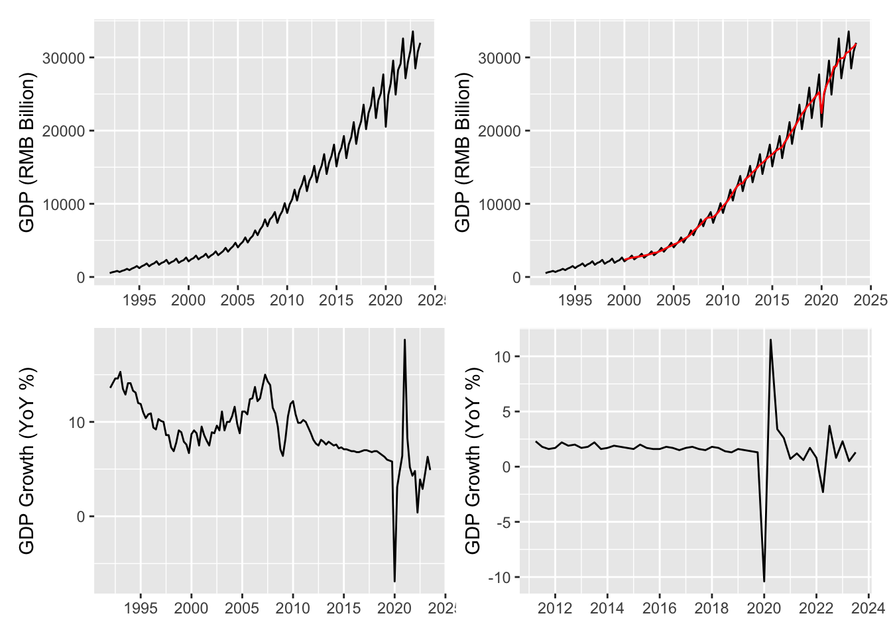

1 Basics
1.1 Time Series Data
Raw data: The raw values without any transformation. We are not so interested in the raw data, as it is hard to read information from it. Take the GDP plot as an example (Figure 1.1, upper-left subplot). There is an overall upward trend. But we are more interested in: how much does the economy grow this year? Is it better or worse than last year? The answers are not obvious from the raw data. Besides, there are obvious seasonal fluctuations. Usually the first quarter has the lowest value in a whole year, due to the Spring Festival, which significantly reduces the working days in the first quarter. The seasonal fluctuations prohibit us from sensibly comparing two consecutive values.
Growth rate: The headline GDP growth is usually derived by comparing the current quarter with the same quarter from last year. \(g=\frac{x_t - x_{t-4}}{x_{t-4}}\times 100.\) This makes sense. As mentioned above, due to seasonal patterns, comparing two consecutive quarters directly does not make sense. The year-on-year growth rate directly tells us how fast the economy grows. However, by dividing the past values, it loses the absolute level information. For instance, it is hard to tell after the pandemic, whether or not the economy recovers from its pre-pandemic output level. Besides, it is sensitive to the values of last year. For example, due to the pandemic, the GDP for 2020 is exceptionally low, which makes growth rate for 2021 exceptionally high. This is undesirable, because it does not mean the economy in 2021 is actually good. We would like a growth rate that shirks off past burdens.
That’s why we sometimes prefer (annualized) quarterly growth rate. \(g=\frac{x_t-x_{t-1}}{x_{t-1}}\times 400.\) Due to seasonally patterns, two consecutive quarters are not comparable directly. A first quarter value is usually much lower than the fourth quarter of last year due to holidays, which does not necessarily mean the economy condition is getting worse. Since this pattern is the same every year, it is possible to remove the seasonal fluctuations. This is called seasonally adjustment. We won’t cover seasonally adjustment in detail, but the next section will give some intuitions on how this can possibly be done. After seasonally adjusting the time series, we can calculate the growth rate based on two consecutive values (annualized by multiplying 4). The bottom-right panel of Figure 1.1 is the seasonally-adjusted quarterly growth. Note that it is no longer biased upward in 2021 as the YoY growth.
Seasonally-adjusted series: This is usually the data format we prefer in time series analysis. FRED reports both seasonally-adjusted and non-seasonally-adjusted series. Seasonal adjustment algorithm is a science in itself. Popular algorithms include X-13-ARIMA developed by the United States Census Bureau, TRAMO/SEATS developed by the Bank of Spain, and so on.
Log levels and log growth rates: We like to work with log levels. A lot of economic time series exhibit exponential growth, such as GDP. Taking logs convert them to linear. Another amazing thing about logs is the difference of two log values can be interpreted as percentage growth. We know from Taylor expansion that for small values of \(\Delta x\) : \(\ln(\Delta x +1) \approx \Delta x\). Therefore,
\[ \ln x_t - \ln x_{t-1} = \ln\left(\frac{x_t}{x_{t-1}}\right) = \ln\left(\frac{x_t-x_{t-1}}{x_{t-1}}+1\right) \approx \frac{x_t-x_{t-1}}{x_{t-1}}. \]
So it is very handy to just difference the log levels to get the growth rates. Log growth is even preferred to percentage growth, because it has the property of summability: summing up a series of log growth rates gives the log level given the initial level. It is not as handy if you want to recover the level values from a series of percentage growth.
\[ \ln x_t = x_0 + \sum_{j=1}^{t} (\ln x_j - \ln x_{j-1}). \]